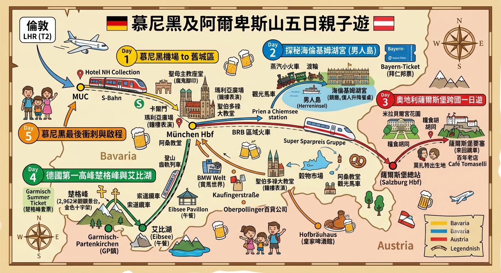

行程摘要

日期
7月26日 (日) 至 7月30日 (四)
同行人物
共 8 人 (6 位成人, 2 位女童: 8歲及10歲)
住宿基地
Hotel NH Collection München Bavaria
(位於慕尼黑火車總站旁，極度方便出遊)
酒店周邊：購物與超級市場指南
酒店位於慕尼黑火車總站旁，地理位置極佳，買補給品或行街都非常方便！
購物必讀：退稅 (Tax Free) 攻略 (英國居民適用)
英國脫歐後，長駐英國嘅大家去德國買嘢係可以退稅㗎！慕尼黑名牌街集中喺 Maximilianstraße，買夠指定金額記得退稅。
門檻與文件： 單次同一間舖頭消費滿 €50.01 就可以申請。買嘢時記得帶備護照 (出示非歐盟居留證明)，付款時同職員講「Tax Free, please」並索取退稅單 (如 Global Blue / Planet)。
慕尼黑機場 (MUC T2) 海關 (Zoll) 扱印程序： 退稅物品必須未經使用並帶出境。
• 如果退稅品放喺「寄艙行李 (Checked Baggage)」(強烈建議)：
先去航空公司櫃檯 Check-in 攞登機證，但同地勤講入面有退稅品，叫佢貼好行李 Tag 後還返件行李畀你！ 推住件行李去 Level 4 嘅海關 (Customs) 櫃位檢驗及扱印，之後直接喺海關旁邊交低行李。
• 如果退稅品放喺「手提行李 (Hand Carry)」：
帶住退稅品正常過安檢 (Security)，過咗安檢後入到禁區，去 Level 5 嘅海關櫃位扱印。
退錢櫃檯： 攞完海關印後，去旁邊嘅退稅公司櫃檯，可以選擇退現金 (每張單會扣手續費) 或退回信用卡 (免手續費，需時幾日至幾星期)。
交通必讀：拜仁邦票 (Bayern-Ticket) 攻略
- 適用日子：Day 2 (海倫基姆湖) 專用。
- 參考票價 (2等座)：1人 €34 | 2人 €44 | 3人 €54 | 4人 €64 | 5人 €74 (即第1位 €34，其後每位加 €10)。
- 買法：買 1張5人票 (€74) + 1張1人票 (€34) (覆蓋6位成人，全日交通費總共 €108)。
- 兒童免費：14歲或以下兒童由父母/祖父母陪同可免費乘搭區域火車！
- 時間限制：星期一至五，必須在早上 9:00 後才可上車使用。
Day 3 專用：特價團體高鐵票 (Super Sparpreis Gruppe) 攻略
帶長者及小朋友輕鬆跨國！包埋劃位，保證 8 個人有得坐，一站直達極舒服。
- 去程班次：08:03 搭乘 ICE 高鐵，一站直達薩爾斯堡。
- 回程班次：19:00 搭乘 RJX 66 (Railjet Xpress)，一站直達慕尼黑。
- 最大優勢：打破邦票 9:00am 限制，可提早出發；長途高鐵座位寬敞，免卻區域火車搵位煩惱。
- 注意事項：此票種必須提早於 DB 官網預訂，且只限乘坐票面上指定的班次 (Train-specific)，絕不能錯過班次！
Day 4 專用：MVV Garmisch Summer Ticket (楚格峰套票) 攻略
帶長者及小朋友登頂的最佳選擇！一票包辦市內交通、火車及纜車，更可打破平日 9:00am 的乘車限制！
- 包含內容：慕尼黑市內交通 (全 MVV 網絡) + 來回 GP 鎮火車 + 楚格峰登山齒軌列車及纜車。
- 最新票價：成人 €94.50 | 兒童 (6-14歲) €12.50。
- 全家總花費：6 位成人 + 2 位小童 = €592。
(比起分開買拜仁邦票 + 正價纜車平少少，重點是免卻兩次排隊買飛的麻煩！) - 最大優勢 (提早出發)：此套票為 MVV 網絡日票，沒有平日 9:00am 後才可搭車的限制！可以搭 08:00 火車提早出發，完美避開下晝山頂變天及旅行團人潮。